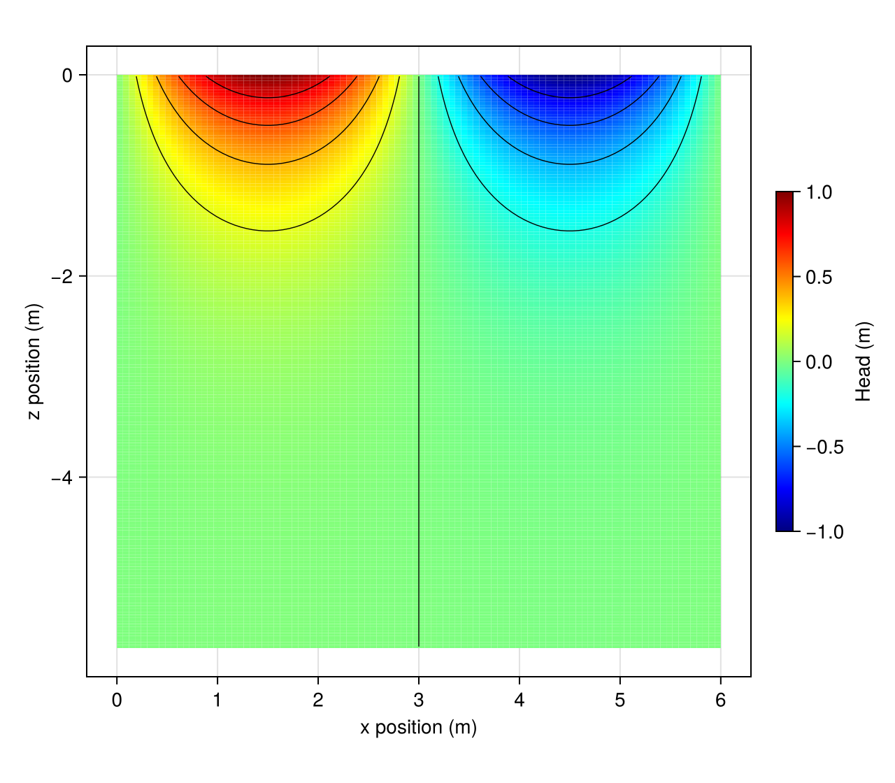
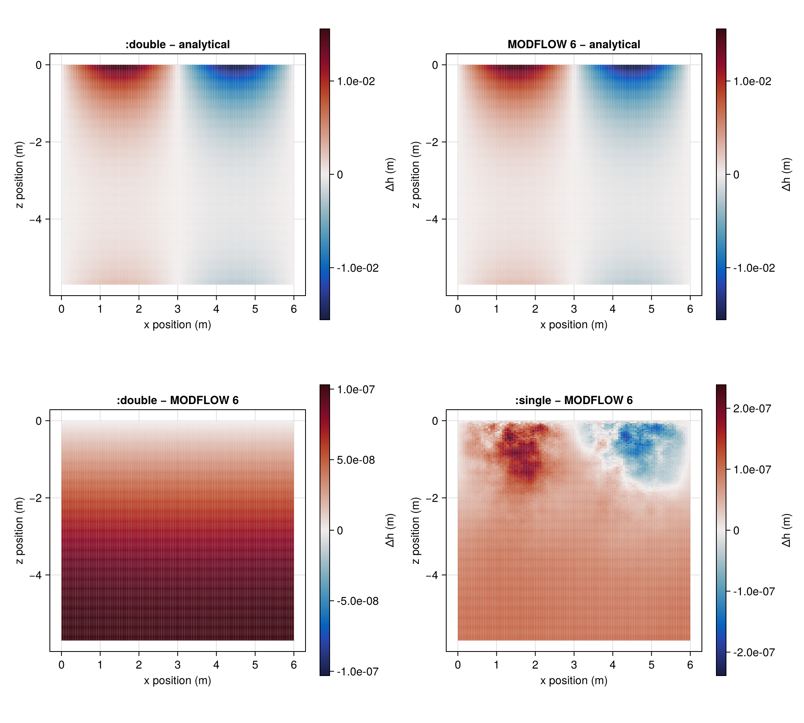

A periodic boundary: a model connected to itself
A vertical cross-section of a confined aquifer, 6 m wide (100 columns of 0.06 m) and 5.7 m deep (190 layers of 0.03 m), with K = 1 m/s. The head at the top is fixed (CHD in the 100 cells of layer 1) to a sine wave, h = sin(2π x / L) with L = 6 m the width of the section. The left and right sides of the section are not boundaries: a GWF–GWF exchange of the model with itself connects the first and the last column of each layer (190 connections), a periodic boundary condition, so the section repeats to the left and to the right. The solution is a decaying wave, h = sin(2π x / L) exp(2π z / L) for z ≤ 0, which the page compares with the heads.
This is the MODFLOW 6 example ex-gwf-spbc. ModflowGPU builds the exchange connections of the model with itself as ordinary connections of its matrix.
Input and the MODFLOW 6 run
ExampleTools (docs/ExampleTools.jl in the repository) takes the input from the released mf6examples.zip, sets the tight closures of the parity tests in the IMS file, and runs MODFLOW 6.8.2.
using ModflowGPU, CairoMakie
mf6 = example_run("ex-gwf-spbc")
mf6.mode, mf6.mf6_time("tight", 0.288348421)The ModflowGPU run
In :double and in :single precision on the CPU, with the default options.
runs = Dict(p => run_modflowgpu(mf6.dir, p) for p in (:double, :single))
r = runs[:double].result
r.convergedtrueHeads
The heads of the section, with contours every 0.2 m, from ModflowGPU's head file. Because of the periodic boundary the head at the left edge continues at the right edge.
g = read_dis_grid(mf6.dir)
h = mask_inactive(read_head(open_head_file(r.head_file), 1))
fig = Figure(; size = (640, 560))
ax = Axis(fig[1, 1]; aspect = DataAspect(), xlabel = "x position (m)", ylabel = "z position (m)")
pl = section_heatmap!(ax, g, h; row = 1, colormap = :jet, colorrange = (-1, 1))
section_contour!(ax, g, h; row = 1, color = :black, levels = -0.8:0.2:0.8, linewidth = 0.7)
Colorbar(fig[1, 2], pl; label = "Head (m)", height = Relative(0.5))
save_figure(fig, "ex-gwf-spbc-head")
Comparison with the analytical solution and with MODFLOW 6
The head differences from the analytical solution at the cell centres (ModflowGPU and MODFLOW 6 in :double precision), and between ModflowGPU and MODFLOW 6 in both precisions.
L = sum(g.delr)
zc = [(l == 1 ? g.top[1, 1] : g.botm[1, 1, l - 1]) / 2 + g.botm[1, 1, l] / 2 for l in 1:g.nlay]
exact = [sinpi(2 * g.xc[c] / L) * exp(2π * zc[l] / L) for c in 1:g.ncol, r in 1:1, l in 1:g.nlay]
h6 = read_head(open_head_file(only(filter(endswith(".hds"), readdir(mf6.dir; join = true)))), 1)
hs = Dict(p => read_head(open_head_file(runs[p].result.head_file), 1) for p in (:double, :single))
panels = [":double − analytical" => hs[:double] .- exact, "MODFLOW 6 − analytical" => h6 .- exact, ":double − MODFLOW 6" => hs[:double] .- h6, ":single − MODFLOW 6" => hs[:single] .- h6]
fig = Figure(; size = (1000, 900))
for (k, (lab, d)) in enumerate(panels)
m = maximum(abs, d)
axk = Axis(fig[div(k - 1, 2) + 1, 2 * mod(k - 1, 2) + 1]; aspect = DataAspect(), title = lab, xlabel = "x position (m)", ylabel = "z position (m)")
p = section_heatmap!(axk, g, d; row = 1, colormap = :balance, colorrange = (-m, m))
Colorbar(fig[div(k - 1, 2) + 1, 2 * mod(k - 1, 2) + 2], p; label = "Δh (m)", tickformat = expformat)
end
save_figure(fig, "ex-gwf-spbc-difference")
The largest difference from the analytical solution (the discretisation error of the model, the same in both programs: the largest part is that the head of the top cells is fixed at the sine wave, while their centres lie 0.015 m below the top) and the largest differences between the programs, next to the values of the parity table, and the wall times (CPU: this build, including compilation for the first run of the session; GPU: the parity table, AMD Radeon RX 7800 XT).
maximum(abs, hs[:double] .- exact), maximum(abs, h6 .- exact)(0.015577545909083113, 0.015577545909083113)stats = Dict(p => (; cmp = compare_with_mf6(mf6.dir, runs[p]), runs[p].time) for p in (:double, :single))
comparison_table("ex-gwf-spbc", stats)| Preset | max |Δh| (m), this build | max |Δh| (m), parity table | Budget, this build | Budget, parity table | CPU time, this build (s) | GPU time, parity table (s) |
|---|---|---|---|---|---|---|
:double | 1.0e-07 | 1.0e-07 | 5.9e-10 | 5.9e-10 | 0.31 | 0.02 |
:single | 2.4e-07 | 2.4e-07 | 9.9e-08 | 9.9e-08 | 0.44 | 0.22 |
Budget: the largest difference of a budget-file flow or a listing-table rate, relative to the total inflow of its time step.